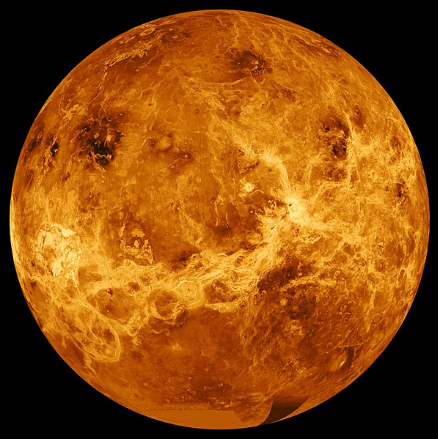

Venus
A continuación de Mercurio encontramos a Venus. Es el que más se parece a la Tierra. Está
cubierto de nubes muy espesas que reflejan la luz solar, de modo que por la noche se ve
brillante y podemos distinguirlo a simple vista.
Su nombre es en honor a Venus, diosa romana del amor.
